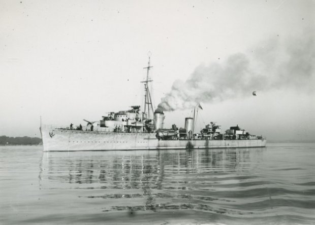

Gerard Callenburgh-klasse
| Naam | Gerard Callenburgh | Isaac Sweers | Tjerk Hiddes | Philips van Almonde |
|---|---|---|---|---|
| Foto |  |  |
||
| Waterverplaatsing | 1628 ton | |||
| Snelheid | 42 knopen | 37,5 knopen | 36 knopen | |
| Bemanning | 230 | 194 | 180 | |
| Afmetingen | 106m x 10,3m x 3,5m | |||
| Bewapening | 5x 120mm Bofors No. 8 (2x2;1x1) 4x 37mm C/30 (2x2) 16x 20mm C/38 (4x4) 8x 533mm torpedobuizen (2x4) |
6x 102mm Mark XVI* (3x2) 4x 40mm Bofors (2x2) 8x 13mm Vickers (2x4) 8x 533mm torpedobuizen (2x4) |
5x 120mm Bofors No. 8 (2x2;1x1) 4x 40mm Bofors (2x2) 4x 13mm Vickers (4x1) 8x 533mm torpedobuizen (2x4) |
|
| Vliegtuigen | - | 1x drijfvliegtuig, vermoedelijk Fokker C.XI-W | ||
| In dienst | 11 oktober 1942 (Als "ZH1" voor de Kriegsmarine) | 29 mei 1941 | - | |
| Uit dienst | Gezonken 9 juni 1944 (Als "ZH1" voor de Kriegsmarine) | Gezonken 13 november 1942 | Tot zinken gebracht 14 mei 1940 | Opgeblazen op scheepshelling 17 mei 1940 |